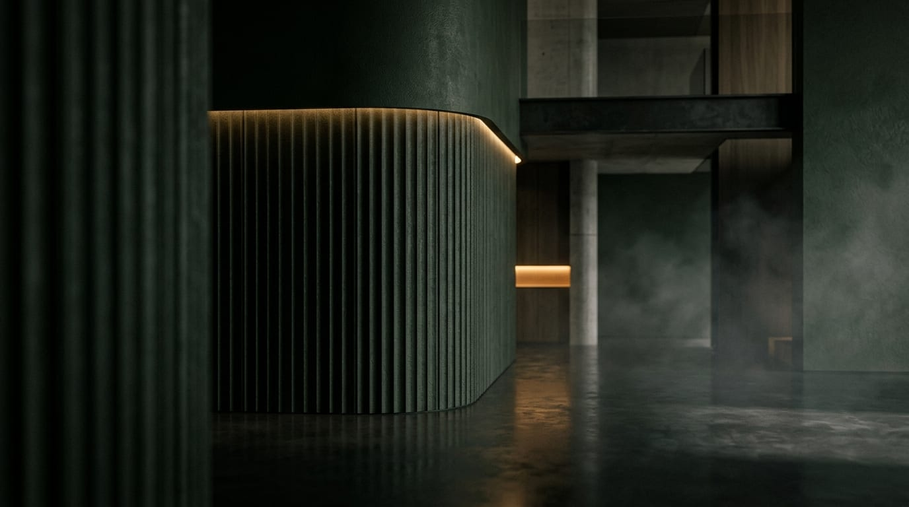

Cybersecurity rigor meets cinematographic aesthetics. Building lightning-fast, high-converting digital platforms with React 19, TypeScript, and 60fps GSAP motion.
Deep dive into the design and performance engineering of vasojevich.com
A bespoke creative media hub combining 100-frame sequential film canvas animations, kinetic GSAP navigation with ambient SVG morphs, Lenis smooth inertial scrolling, and a zero-latency client-side multilingual translation engine.
Built with GSAP 3.15 ScrollTrigger and Lenis smooth inertial scrolling. Micro-animations are strictly bound to GPU transform/opacity layers to maintain 60fps on mobile without layout thrashing.
Instead of generic loading spinners, the site renders a 100-frame sequential canvas film animation with adaptive frame skipping and memory-safe image cache recycling.
Applying academic cybersecurity principles from FCSE (FINKI / UKIM): zero-trust client input sanitization, hardened Content Security Policy, and instant dual-language (EN/MK) state synchronization.
Four core disciplines that guarantee every project outperforms ordinary website templates.
Zero-trust input sanitization, hardened headers, and proactive mitigation of OWASP vulnerabilities.
Cinematographic visual rhythm, 60fps micro-animations, and typographic hierarchy with physical weight.
Zero third-party bloat. Sub-50ms TTFB, 100/100 Google Lighthouse scores, and minimal asset footprints.
Instant dual-language (English & Macedonian) switching without page reloads or layout shift.
Battle-tested tools built for longevity, scalability, and seamless user experiences.
React 19, TypeScript, Next.js, Vite 8, Tailwind CSS v4, Modern Semantic HTML5, CSS Custom Properties.
GSAP 3.15 (ScrollTrigger, Flip, Observer), Framer Motion 12, Lenis Smooth Scroll, HTML5 Canvas 2D.
Node.js, Express, Python, Zero-Trust Input Sanitization, CSP L3, Git CI/CD, Edge Deployments.